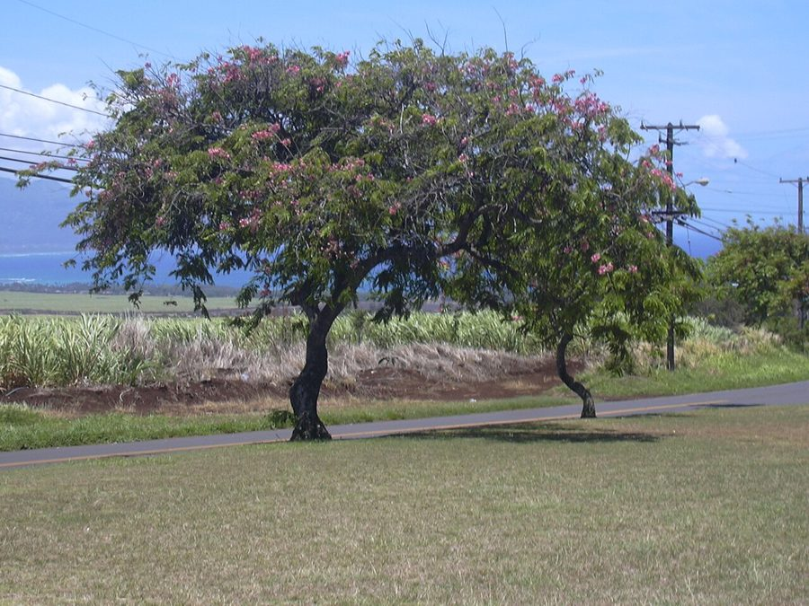

पिंक शावरPink Shower Tree
Cassia javanica · Fabaceae · FLR-0319

- Scientific name वैज्ञानिक नाम
- Cassia javanica L.
- Family कुल
- Fabaceae
- Hindi हिंदी
- पिंक शावर
- Local names स्थानीय नाम
- pink shower tree, java cassia, gulabi amaltas, pink cassia
- Status here यहाँ की स्थिति
- naturalized
- Movement आवागमन
- Resident, here all year
- Known from कहाँ दर्ज
- Others have published records from the wider Awadh–Purvanchal plain, none yet from Basti–Ayodhya अवध–पूर्वांचल से दूसरों के प्रकाशित अभिलेख, बस्ती–अयोध्या से अभी नहीं
- IUCN IUCN
- not evaluated
- Review समीक्षा
- not yet reviewed
When to look कब देखें
Present all year. साल भर मौजूद।
Uses and possibilities उपयोग और संभावनाएँ
“Traditional medicine” means a documented traditional use, not a claim that it works. Nothing on this page is medical advice.
Drawn from the documented uses in the profile below, where each is labelled traditional, current or a research lead. All uses →
Tell it apart from इनसे अलग पहचानें
पिंक शावर / Pink Shower Tree
Cassia javanica L. — Fabaceae
पिंक शावर — दक्षिण-पूर्व एशिया से लाया गया एक अत्यंत आकर्षक सजावटी वृक्ष, जिसे उत्तर भारत में 'गुलाबी अमलतास' भी कहा जाता है। मई और जून की तपती धूप में जब इसकी पत्तियाँ हल्की होती हैं, तब पूरा पेड़ हल्के गुलाबी और सफ़ेद फूलों के घने गुच्छों से लद जाता है। इसकी छायादार फैली हुई डालियाँ और लंबी बेलनाकार फलियाँ इसे दूर से पहचान दिलाती हैं।
Quick Identification त्वरित पहचान
| Feature | Description |
|---|---|
| Habit | Medium-sized deciduous tree 10–18 m tall with a broad, flat-topped crown (Brandis 1906) |
| Bark | Smooth and greyish-brown on younger branches, becoming darker and shallowly fissured with age |
| Leaves | Paripinnate, 20–40 cm long, with 8–14 pairs of oblong-elliptic leaflets (Duthie 1903) |
| Flowers | Showy, 4–6 cm across, ranging from pale rose-pink to peach, fading to white (Brandis 1906) |
| Inflorescence | Dense lateral or terminal corymbose racemes borne along horizontal branches |
| Pods | Cylindrical, indehiscent, dark brown, 30–60 cm long, 1.5–2.5 cm thick (Duthie 1903) |
Field tip: Look along canal boulevards and university campuses in May for spreading trees covered in heavy trusses of bright pink-and-white blossoms resembling apple blossoms.
हिंदी — कैसे पहचानें: चौड़ा फैला हुआ छत्र, अमलतास जैसी लंबी फलियाँ, और जेठ की गर्मी में खिलने वाले सेब के फूलों जैसे गुलाबी-सफेद आकर्षक फूलों के गुच्छे।
Morphology शारीरिक संरचना
Biometrics (Brandis 1906; Duthie 1903):
| Measurement | Range |
|---|---|
| Tree height | 10–18 m (Brandis 1906) |
| Trunk girth | 1.0–2.2 m (Brandis 1906) |
| Leaf length | 20–40 cm (Duthie 1903) |
| Leaflet length | 3–6 cm (Duthie 1903) |
| Leaflet width | 1.5–3.0 cm (Duthie 1903) |
| Flower diameter | 4–6 cm (Brandis 1906) |
| Pod length | 30–60 cm (Duthie 1903) |
| Pod diameter | 1.5–2.5 cm (Duthie 1903) |
Trunk and branches: Bole typically straight, branching out into widespread horizontal or gracefully arching limbs that produce a parasol-like canopy. Bark greyish-brown, relatively smooth.
Leaves: Alternate, pinnately compound without a terminal leaflet. Leaflets opposite, 8–14 pairs, oblong or elliptic-ovate, obtuse or emarginate, slightly pubescent when young.
Flowers and fruit: Flowers fragrant, bisexual, arranged in stout corymbose racemes. Petals five, subequal, clawed, deep rose-pink turning pale with age. Stamens ten with hairy filaments, the three lower ones longest and curved. The fruit is a long, rigid, woody, cylindrical pod divided internally into numerous one-seeded compartments.
हिंदी: पेड़ की शाखाएं छतरी की तरह फैलती हैं। पत्तियाँ कई जोड़ों में बंटी होती हैं। फूल खुशबूदार और गुलाबी होते हैं। फलियाँ लंबी, गोल और गहरे कत्थई रंग की होती हैं।
Behaviour & Ecology व्यवहार एवं पारिस्थितिकी
Cassia javanica is a fast-growing, light-demanding ornamental tree widely naturalised in tropical and subtropical regions. It performs well in deep alluvial plains, tolerating high summer temperatures up to the onset of the monsoon.
The spectacular blooming display in early summer attracts large numbers of nectar-seeking insects. The flowers possess enantiostylous floral architecture designed for buzz pollination by large carpenter bees. The foliage serves as a preferred larval host for pierid butterflies, whose caterpillars often defoliate branches in late monsoon without harming mature trees.
हिंदी: यह धूप पसंद करने वाला सुंदर पेड़ है। इसके गुलाबी फूलों पर बड़ी भंवरी और तितलियाँ मंडराती हैं, और इसकी पत्तियों पर पीली तितलियों की इल्लियाँ पलती हैं।
Life Cycle / Phenology जीवन चक्र एवं ऋतुचक्र
| Period | Phenological Event |
|---|---|
| January–March | Leaves turn yellowish and fall; tree remains partially to fully bare in late winter |
| April–June | Tremendous pink floral flush appears with new pale green foliar flushes |
| July–October | Cylindrical green pods develop through the rainy season while butterfly larvae feed |
| November–December | Long woody pods turn dark blackish-brown and mature on the branches |
Seeds possess a hard, water-impermeable seed coat that requires scarification or weathering before germination occurs in moist soil.
हिंदी: सर्दियों में पत्तियाँ झड़ जाती हैं। अप्रैल से जून तक पेड़ गुलाबी फूलों से भर जाता है। बरसात में फलियाँ बड़ी होती हैं और जाड़ों में पकती हैं।
Associated Species / Interactions संबद्ध प्रजातियाँ एवं पारस्परिक क्रियाएं
- Pollinators: Large carpenter bees (Xylocopa species), Asian Honey Bee, and hawk moths pollinate the open flowers.
- Larval Host: Primary larval food plant for the Common Emigrant (Catopsilia pomona) butterfly.
- Avenue Companions: Often planted alongside Amaltas and Flame Tree in designed city landscapes.
हिंदी: इसके फूलों पर बढ़ई भंवरे और मधुमक्खियाँ आती हैं, और अमलतास के साथ मिलकर यह सुंदर दृश्य बनाता है।
Pests and Diseases कीट एवं रोग
- Heavy defoliation by pierid caterpillars (Catopsilia pomona) occurs regularly in August and September.
- Stem borer beetles attack older trees with wood cavities or mechanical injuries.
- Powdery mildew occasionally coats young post-monsoon foliar flushes.
हिंदी: बरसात के बाद तितलियों की इल्लियाँ कभी-कभी बहुत सी पत्तियाँ खा जाती हैं, जिससे पेड़ कुछ समय के लिए गंजा हो जाता है।
Agricultural / Human Relevance कृषि एवं मानवीय उपयोगिता
Horticultural and Landscape Uses:
- Ornamental avenue tree. Widely planted throughout northern India along highways, canal banks, university grounds, and public parks for its stunning pink blossoms and broad shade.
- Wood. The reddish-brown wood is hard and heavy, occasionally used in light construction and tool making in Southeast Asia.
- Traditional medicine. Pod pulp has documented traditional uses as a mild laxative, similar to that of Cassia fistula (Kirtikar & Basu 1935). This is a record of traditional use, not medical advice.
Today. It is one of the most widely propagated exotic flowering trees across India, favoured by municipal corporations for summer urban cooling.
हिंदी: पिंक शावर को मुख्यतः सड़कों, नहरों की पटरियों और बाग़ों में छाया और सुंदरता के लिए लगाया जाता है। इसकी फलियों का गूदा पारंपरिक रूप से पेट साफ करने वाले हल्के रेचक के रूप में प्रयुक्त होता रहा है।
Expected Locally स्थानीय संभावना एवं उपस्थिति
Not a field record. Written from published accounts for eastern Uttar Pradesh. No confirmed local sighting yet — if you have seen it, that is what the atlas needs.
अभी तक स्थानीय पुष्टि नहीं। यह विवरण प्रकाशित स्रोतों से है, किसी अवलोकन से नहीं।
Expected in eastern Uttar Pradesh along planted canal roads, state highways, civil lines compounds, and college campuses around Basti and Ayodhya. GBIF holds published records from the wider Awadh–Purvanchal plain, none yet from Basti–Ayodhya. A first local record would be a dated photograph of the foliage, flowers, or fruit, submitted with locality details through the project's About page.
Distribution भौगोलिक वितरण
Global range: Native to Southeast Asia (Indonesia, Malaysia, Thailand, Philippines); widely introduced and naturalised across tropical Asia, Africa, and the Americas.
In India: Planted in gardens, avenues, and along roadsides throughout Uttar Pradesh, West Bengal, Maharashtra, and southern India (Brandis 1906).
In Uttar Pradesh: Common in urban forestry plantings, institutional arboretums, and highway corridors (Duthie 1903).
In Basti district / eastern UP: Expected as an ornamental tree in municipal parks, highway borders, and township compounds.
हिंदी: दक्षिण-पूर्व एशिया का मूल निवासी यह पेड़ आज भारत के सभी शहरों और राजमार्गों पर लगाया जाता है।
Research Questions शोध प्रश्न
- How does the flowering period of Cassia javanica overlap with native Cassia fistula in eastern UP? / पूर्वी उत्तर प्रदेश में देशी अमलतास और गुलाबी अमलतास के खिलने के समय में कितना अंतर होता है?
- Which carpenter bee species are the most effective pollinators of its buzz-pollinated blossoms? / इसके फूलों से पराग निकालने में कौन-से बड़े भंवरे सबसे अधिक कुशल होते हैं?
- What is the survival rate of urban avenue plantings during prolonged dry heatwaves? — Monitor tree vigor across roadside saplings in summer.
- How intense is larval defoliation by Catopsilia butterflies on campus plantings in Basti? — Quantify foliage loss during late monsoon breeding surges.
- Can local nurseries propagate this species efficiently from seeds versus stem cuttings? / क्या स्थानीय पौधशालाएं बीज या कलम के माध्यम से इसका आसानी से उत्पादन कर सकती हैं?
Similar Species समान प्रजातियाँ
| Species | How to tell apart | हिंदी |
|---|---|---|
| Amaltas (Cassia fistula) | Flowers bright golden-yellow in long pendulous racemes; bark pale grey | फूल चमकीले पीले और लटकते हुए |
| Flame Tree (Delonix regia) | Leaves bipinnate with tiny leaflets; flowers fiery scarlet-orange | पत्तियाँ बहुत बारीक, फूल लाल-नारंगी |
| Shisham (Dalbergia sissoo) | Leaves pinnate with 3–5 round alternate leaflets; flowers minute cream | पत्तियाँ 3–5 गोल पर्णक वाली, छोटे फूल |
Field rule: Spreading parasol crown with pinnate leaves, large corymbs of fragrant rose-pink flowers fading to white in early summer, and long cylindrical woody pods distinguish Cassia javanica.
Taxonomy & Classification वर्गिकी एवं वर्गीकरण
Original description. Described by Carl Linnaeus in 1753 in Species Plantarum, vol. 1, p. 379. The specific epithet javanica indicates its original collection from the island of Java.
Subspecies. Several subspecies and varieties are recognised across its native Southeast Asian range, including subsp. nodosa (Buch.-Ham. ex Roxb.) K.Larsen & S.S.Larsen.
Family and order placement. Belongs to the legume family Fabaceae, subfamily Caesalpinioideae, in the order Fabales.
Phylogenetic notes. Cassia sensu stricto is restricted to woody trees with cylindrical indehiscent pods and ten stamens, distinct from Senna and Chamaecrista.
IUCN status rationale. Not evaluated in the master expansion list; it is widespread and abundant globally in cultivation and semi-naturalised secondary forests.
हिंदी: इसका मूल नामकरण 1753 में कार्ल लिनिअस द्वारा जावा द्वीप के नमूनों के आधार पर किया गया था, और यह फैबेसी कुल का सदस्य है।
Photo Gallery छायाचित्र दीर्घा
No photos yet — add field photos to media/species/pink_shower_tree/ and run node scripts/sync_photos.js.
Photos needed आवश्यक फोटो
- [ ] Wide shot of blooming tree with pink crown along a road (सड़क किनारे गुलाबी फूलों से लदा पूरा पेड़)
- [ ] Close-up of pink-and-white flower trusses and stamens (गुलाबी फूलों और पुंकेसरों का विस्तृत दृश्य)
- [ ] Long cylindrical dark brown seed pods hanging from limbs (शाखाओं से लटकती लंबी गोल फलियाँ)
References संदर्भ सूची
- Linnaeus, C. (1753). Species Plantarum, vol. 1, p. 379. Holmiae: Laurentii Salvii.
- Brandis, D. (1906). Indian Trees, p. 253. Archibald Constable & Co., London.
- Duthie, J.F. (1903). Flora of the Upper Gangetic Plain and of the Adjacent Siwalik and Sub-Himalayan Tracts, vol. 1, p. 293. Government Printing, Calcutta.
- Baker, J.G. (1878). The Flora of British India, vol. 2, pp. 267–268. L. Reeve & Co., London.
- Kirtikar, K.R. & Basu, B.D. (1935). Indian Medicinal Plants, 2nd ed., vol. 2, pp. 860–862. Lalit Mohan Basu, Allahabad.
- GBIF Occurrence Data — Cassia javanica L., India (2025).
Source file: species/flora/trees/pink_shower_tree.md